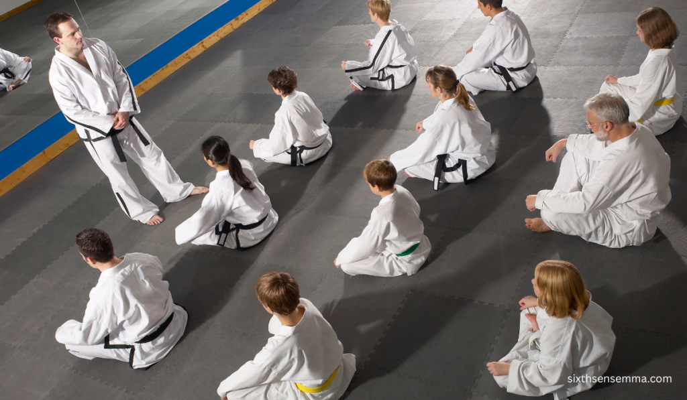
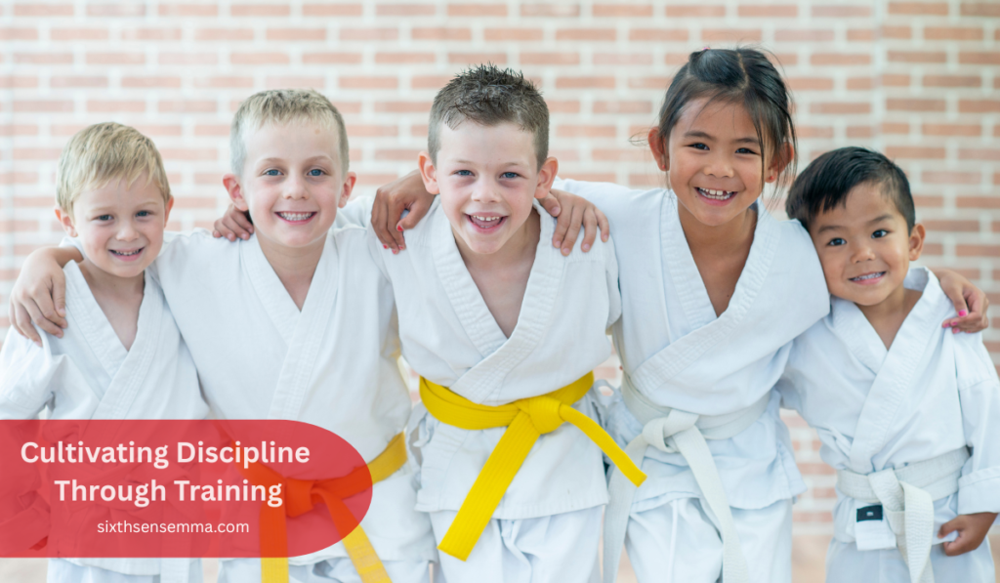
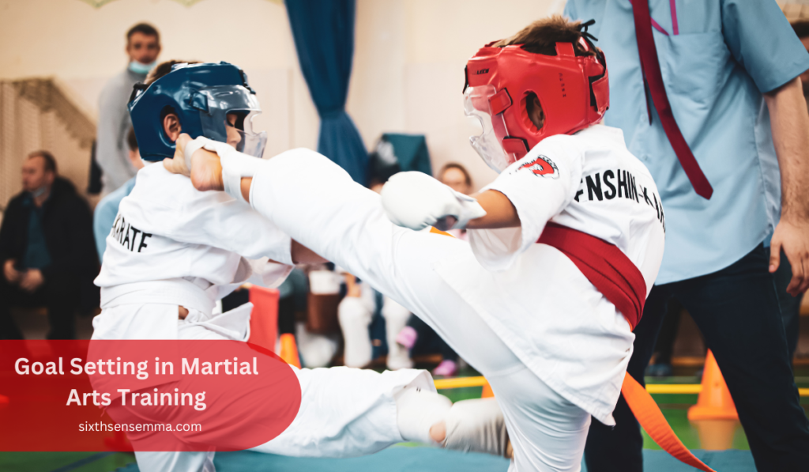

Martial Arts Classes: Transform Your Life with Power

Martial Arts Classes attending is a perfect opportunity to improve different aspects of your life. Besides the fight-learning aspect, the classes are also there to help you get in shape, make you more self-confident, and allow you to meet new people. A novice or an experienced person, no problem, with these courses, everyone is considered and popularized. With a range of types, such as Muay Thai, Brazilian Jiu-Jitsu, and Karate, you can pick the one of your interest whatever it is.
Participating in martial arts classes is a reason behind holistic health and the happiness through which you can render yourself the award. They teach how to be disciplined and self-absorbed, as well as serve as a workout that you can enjoy. You will surely notice that practice gives you relief from the stress and makes your wellness better as a result of this. Accordingly, if you are in quest of a way to attain a change for the better in your life, martial arts can be the perfect choice for you among the variety of available therapies.
Benefits of Martial Arts Classes
The thought that comes to the majority of folks about martial arts and the first knowledge they might extract is the fancy moves and the dramatic fight scenes. Nevertheless, that is not the only fact, as martial arts classes can provide a wide range of benefits. They help with physical fitness, mental clarity, discipline, and even social connections. – What’s not to love?
Visiting martial arts classes is one of the most effective ways of enhancing total wellness. The aforementioned assorted pictures of the discipline are the de facto reason you should consider picking up one of those:
- Physical Health: Regular exercise allows for the development of structure, endurance, and flexibility.
- Mental Health: Lessons help in self-control, stress reduction, and attention.
- Community Engagement: Kudos to martial arts schools that consolidate a sense of virtual friendship.
Isn’t it amazing to find something that pleases one’s body, mind, and one’s soul at the same time at last?
https://youtu.be/oGmkxo72IzA?si=dJe1JCz-2qOo6Jnv
Types of Martial Arts
Overview of Various Martial Arts Styles
There exist many variations of martial arts, each one with its own special taste-like savor, i.e. like the flavor of your favorite via-option. From the peaceable Tai Chi to the brutish MMA, each style is unique and holds some interesting features. Muay Thai, Brazilian Jiu-Jitsu, Karate, and Taekwondo are popular and the best ones to practice for martial arts classes in the world.
Muay Thai
Muay Thai is often referred to as the “art of eight limbs” or abbreviated as “AELO” for the style of fighting. Picture yourself doing this: using all eight of your limbs (hands, elbows, knees, and shins), doing the same thing, and then perhaps you’ll find it to be more effective. It’s like a beautiful dance through which you are learning how to beat the one against you. Furthermore, these intensive advantages include conditioning, along with cardio-respiratory training utilizing Muay Thai can enhance the fitness of your body.
Here’s what you can expect:
| Benefit | Details |
|---|---|
| Strength | Building up of the core strength and muscles’ handsomeness. |
| Cardiovascular Health | One of the major benefits of Muay Thai training is that you will get a high intensity of cardio training. |
| Discipline | Training is only for the very committed who are interested in mastering the technique in deep. |
Yeah, it even becomes a workout that will lead to a good sweat-drenched experience—but, ultimately, isn’t that the main reason for satisfaction?
Brazilian Jiu-Jitsu
Brazilian Jiu-Jitsu (BJJ), indeed, is a device that radically alters the grappling and ground fighting scenes. Techniques matter more! You can be a smaller opponent but still come out on top if you know what you’re doing.
From chokes to joint locks, BJJ focuses on technique and positional control. It’s not just practical for self-defense; it also teaches resilience and strategy. You must think on your feet—quite literally!
| Key Aspect | Details |
|---|---|
| Self-Defense | Highly effective in real-world situations. |
| Problem Solving Skills | Teaches you to think critically under pressure. |
| Fitness | Provides a full-body workout without the wear and tear of traditional lifting. |
MMA (Mixed Martial Arts)
“Under which we plunge to thunderous applause!” Reminding you of the most typical attitude of an MMA fan that roots for fighters. This style contributes to attractive simplicity as it welcomes multiple civilizations, e.g., the art of war from Muay Thai, Brazilian Jiu-Jitsu, and others. If you need a thrilling and swift sports industry ever, you will barely find something better than MMA .
The thing that really makes the sports so intense in the competitive side of it, but on the other hand, it’s also a community that’s looks very much after one another, helping each other when needed. It’s similar to the movies where the heroes combine their strength in order to fight evel.
| Element | Details |
|---|---|
| Variety of Techniques | Combines not only the usual grappling and striking but also submission holds |
| Physical Challenge | Training for a fight is some quite brutal stuff to go through, as it will most definitely be your most stringent runtime. |
| Community Support | Sometimes, the brotherhood in sports preparing for fights will become so strong that they will receive a great deal of support. |
Karate
A lot of people think of Karate, which is a well-known and respected form of martial arts. The focus here is to develop discipline and good form in your striking techniques. The journey you undertake to discover the ‘ninja’ in you will make you practice different types of punches, kicks, and blocks that are quite numerous and lead to an improvement in your skills as a warrior.
| Focus Area | Details |
|---|---|
| Discipline | Enables the configuration of self-control and concentration through repetitive exercises. |
| Physical Conditioning | Better your stability, flexibility, and fortitude |
| Emotional Control | Teaches easily the regulation of stressful situations with calm and composure. |
Karate does not stop at throwing punches; instead, you learn to balance your life. Your body becomes toned, your mind becomes sharp, and your confidence gets high
Taekwondo
Last but not least, let’s discuss Taekwondo! This South Korean military hand-to-hand combat is well known for its over-the-top kicks and the rushing-around activities it includes. If you are a lively and flexible person who treasures showing his or her agility, then Taekwondo is probably the martial arts class that best suits you. The fantasy and flying kicks and the sharp turns can seem like a part in a movie!
| Aspect | Details |
|---|---|
| Flexibility | The main idea is to work hard on the development of the leg’s own elasticity from bending to high-kick climaxes. |
| Speed and Agility | Increase the quickness of reaction times from your coach and at the same time learn how to fight faster through dynamic exercises as well as sparring. |
| Sporting Opportunities | For sportsmen, there exist numerous opportunities to exhibit what they have learned. |
Just visualize yourself taking part in a competition or simply, you know, being able to show your friends your latest skills and thus feeling rewarded. It’s like you are a winner or always winning.
Martial Arts Classes for Personal Development
Building Confidence through Martial Arts
The thing that you feel once you step on the mat for the very first time seems magical. Many people think martial arts could be nothing else but very mild or unsure paths. Not long after, this perception gets lost, as the physical act of hitting bull’s eye with a punch or trapping commencing a lock can uplift their self-belief to a much higher degree.
Self-confidence rockets when you have realized your ambitions—be it through obtaining belts or performing tasks to perfection. And bit by bit you come to realize you are capable of doing anything, that you become the rock of your self-respect that breaks a lot of obstacles along your life’s course. Building self-esteem that is like a fortress, indeed.
Physical Fitness Benefits
Enhancing Physical Fitness through Martial Arts
Fitness is not only about the equipment and the weights, but it also can be about kicking the perfect roundhouse. Martial arts inclusive class is like inclusive exercise. Training in sports like Muay Thai and Mixed Martial Arts will not only increase the blood flow but completely change you to look in a new, unfamiliar way that you have never imagined before.
Benefits of Physical Fitness in Martial Arts:
- Strength and Conditioning: You will have the thrill of your life building muscle even though you probably don’t notice it if you are one of these lucky / how lucky do you feel right now who are humble and always warm, the more surprised you get no but the less noise you get the less surprised you get when you figure out that who you are even they are as wrong as anyone! Please, write a note if you know their addresses! haha!
- Core Stability: The core is trained thoroughly with many of the parts included
- Agility and Coordination: Your body acquires the ability to move in a rhythm.
Numerous studies have found out that people regularly training in martial arts exhibit an increase in cardiorespiratory condition, as well as a drop in stress levels, the issue the rest of the world is addressing the trying to beat, that can be easily addressed outdoors.
| Statistic | Impact |
|---|---|
| Cardio Increase | Considerably, martial arts participants tend to boost their heart strength by up to 20% while training. |
| Weight Management | A good workout plan can give an average weight loss of 5 to 10% over a period of a few months. |
| Flexibility Improvement | Partisans will come to enjoy a greater degree of elastic movements in no more than a couple of Super Bowls. |
Getting fit while cracking jokes with your teammates? Yes, please!
Mental Health Advantages
Stress Relief and Mental Clarity from Training
Life can be really, really tough sometimes, right? Work, family, girlfriend, boyfriend, and whatever else may stress you out and bring you down. This is the point at which martial arts clap their hands over their head and come to your rescue.
Martial arts do not only involve punches and kicks but also are an amazing way to free your mind. The required concentration during the workout allows you to get rid of the things that have been bothering you throughout the day.
Research data reveal that martial arts can aid in the spectrum of anxiety and depression. A poll has observed that anxiety was reported to have been reduced in helpers by 83% when they were regular attendants at class.
It’s a complete solution in two-for-one form: get yourself in great shape and allow yourself to take a little emotional distance at the same time!
Discipline and Focus
Cultivating Discipline through Training

The idea of discipline is inherent in martial arts. Consider training as a support of your workout. Either go for martial arts classes in the early morning, or spend time after work, discipline will help you increase endurance over time.
The instructors make students do exercises to help them attain and remember the techniques and footwork. Training can be tough, fatigue, and sometimes, even unattractive. However, it is the place to face the truth that where true development comes from. Each time you practice a kick, you will give more strength to your mind and body. It’s not just a matter of how much effort you put into your workout; it is also about how frequently you come to practice!
Moving this observance to all elements of one’s life enhances the sense of commitment of students—who will be at work, in relationships, and so forth.
Social Connections
Building Community in Martial Arts Classes
Learning martial arts is not just about training your kicks or grappling skills, but it is about being someone’s family. Imagine the following situation. You join a choir, and after your first practice it feels like you are part of a family. This way, you are likely to come across and make friends who are not only interested in the same things as you are but also who have the same problems which you will later solve together.
Being supported by others is one of the cool things about martial arts. Whether you are still a novice or an expert in your field, there are always great things to be had from someone else where you come from. Besides, you will have a good time sharing stories, jokes, and maybe even a problem with the performance of a technique that is particularly hard.
Imagine after class, you connect with a fellow student over smoothies, discussing tips on mastering that elusive head kick or perfectly executing a guillotine choke. Creating bonds over shared experiences makes the journey exciting and enjoyable.
Self-Defense Skills
Learning Effective Self-Defense Techniques
Let’s be honest, self-defense skills are the main reason many people join martial arts classes in the first place. It is a major confidence build-up for a person to know that he/she can defend himself/herself if the situation calls for it. And let’s be clear, martial arts isn’t just about fighting; it’s about understanding how to avoid conflict, too.
In the Muay Thai classes, you will be taught the most effective striking techniques, while in Brazilian Jiu-Jitsu classes the instructors will take you through the most efficient grappling and escape maneuvers. MMA is a hybrid of these styles that helps build a competency in self-defense that perfectly fits the daily life situations one may encounter.
Let’s start with a dope study: Researched by the National Institute of Justice, the study found that trained martial artists are less likely to act with force than the untrained ones. In the process of learning self-defense, one also gains situational awareness. It’s the idea of recognizing when to engage and when to withdraw.
Real-World Scenario
Let’s say you’re talking a quiet walk around in your area when you spot a stranger who seems so. With the knowledge you’ve gotten from training, you can handle it freely, as it will come instinctively to you. Whether it’s your ability to walk confidently to stop any potential danger or the knowledge and skill to defend yourself in case of a physical attack, the time spent training in martial arts is the best time investment you’ve ever made.
Setting and Achieving Goals
Goal Setting in Martial Arts Training

In martial arts, success is the process of going through various stages and attaining personal goals in the end. How does a martial arts student achieve success? By setting out to accomplish a certain skill, like the blue belt, or by skyrocketing one’s fighting skills in the sparring class.
In this context, the importance of establishing objectives, which can be measured, is exposure to the sources of motivation. The tools to feed the student’s knowledge of his or her progress will be the belt ranking, the lapel, and sparring.
Suppose the sport you choose is Brazilian Jiu-Jitsu. Then one day, you will become a veteran at white belt and set a goal to gain a blue belt. Each step in your improvement of patterns and techniques is symbolized by a belt, which makes you feel stronger and more self-assured. Also, not only will these achievements be yours, but also self-discipline that is thicker than just a dojo background!
Tailored Training for All Ages
Age-Appropriate Martial Arts Classes
It is amazing that martial arts classes are suitable for all age groups. Not only can you take classes that have been specifically designed for our children, but you can also find, fun exercises, skill, and confidence-building games.
Let’s not neglect adults in this comprehensive analysis. The kung fu class for adults is a great way for those who are just starting or for those who got out of shape. On the one hand, ladies-only self-defense classes are aimed at empowering girls and equipping them with the knowledge to learn and understand the situation.
Here’s a quick glance:
| Age Group | Class Type | Focus |
|---|---|---|
| Children | Children’s Martial Arts Classes | Confidence, discipline |
| Teens | Mixed Martial Arts Classes | Self-defense, teamwork |
| Adults | Adult Martial Arts Classes | Fitness, stress relief |
| Women | Women’s Only Martial Arts Classes | Empowerment, confidence |
Age and knowledge are not your problems. A special course is created for every age group, as well as for people with different levels of experience. You will be self-learning and will have more time, after all, it is never too late to start learning
Tips for Choosing the Right Class
H2: Picking the Most Suitable Martial Arts Class
There are some valuable insights carried over from your excitement about martial arts classes. No doubt, the question gets asked, “Which one is the most suitable for me?” Have no fear, for I am going to offer you several recommendations that I believe should give you the wisdom to make a good decision.
- Instructor Qualifications: Make sure the trainers are highly experienced and great at teaching. Wouldn’t you like having a person to direct you, huh?
- Class Size: A smaller number of students in the class can denote more focus on your learning from your teacher.
- Curriculum: Verify that it is in line with your target. Do you want to undergo self-defense training? Do you also think about joining contests?
- Schedule Flexibility: Think about your daily schedule for the class. In any case, early morning classes will not get in your way. It should, as usual, be something, which helps with your schedule.
- Trial Classes: There are many studios that give the chance to attend the first martial arts class for free or even a session that is introductory. This is the best way to have the first encounter before you decide whether you want to sign up for the class very long. Maybe, joining a group class at first can hide the answer to where you belong, maybe it’s there that your life will change for the better.
I remember the time when I was a newbie; I attended a trial class and was pleasantly surprised by the friendliness of everyone. It was great for me to see their open-heartedness. You know the saying, your first leap into something new could be the toughest, yet the community and the entire journey will make it a piece of cake!
The Cost of Martial Arts Classes
Understanding the Financial Commitment
Hey, shall we discuss how to join a martial arts class and the associated costs? The prices of courses are bade on the location, class type, and what is included in the cost..
Knowledge is power, right? Well, here are the essentials you need to familiarize yourself with:
| Class Type | Average Monthly Cost |
|---|---|
| Adult Martial Arts Classes | $100 – $150 |
| Children’s Martial Arts Classes | $70 – $120 |
| Mixed Martial Arts Classes | $120 – $180 |
| Women’s Only Martial Arts Classes | $80 – $140 |
| Free Martial Arts Classes (Introductory/Trial) | Free/Charge Optional |
Get your first bare-footed karate training and remember that no dress code is required. You might need some gloves for Muay Thai or a gi for Brazilian Jiu-Jitsu, but these investments pay off when you see your skills improve.
Also, the place provides tuition for the whole family, where all family members can join and practice their skills. This means you can be the coach of your son and be the teammate of your daughter. That’s double the fun and half the expense, right?
Martial Arts Classes Near Me: Find Your Local Training Partner!
Find Your Local Training Partner! Is the turning point in your journey achieved by the way of martial arts ready for you? At Sixth Sense Martial Arts, we make sure that we completely customize our classes, enabling everyone to get the best out of the lot, thus making everyone happy. Do you have experience or are you a beginner who is ready to take part in the competition? Do not worry; we have a training program for all levels.
Here, you will find the following opportunities:
- Adult BJJ Classes: Achieving your goal, fits the objective of both youth and adults group, and helps you to unlock the true capacities of your mind in the quiet of a small group.
- Adult Muay Thai Classes: Try the art of eight limbs! Enhance your morale, speed, slant, and we will help you to be in mastery of the hard beating solutions.
- Kids BJJ Classes: Our exciting and fun-filled encounters guide youngsters through vital self-protection methods, self-discipline as well as self-confidence as well as their well-being is enhanced through new friendships.
- Teen BJJ Classes: The program is amazing for teenagers who are passionate about martial arts and are seeking a life full of energy and excitement while also being physically active.
- Teen Muay Thai Classes: Young adults will not only develop strength and confidence from participating in the class but also perfect their high-impact leadership abilities.
Here is what you can do to become a part of our community: At no cost, you can secure your one-day trial class, which is enough to get you to see the whole new attire that martial art can bring to your life. Do you want to know more about our trial classes or want to book your very first session today? Please reach out our Trial Class page, and you are ready!
To be a team player, Sixth Sense Martial Arts will be your sun blocker and time travel machine holder that is going to escort you until the full accomplishment of your goals!
Long-Term Commitment and Lifestyle Changes
Committing to a Martial Arts Lifestyle
What most people overlook is that joining martial arts classes brings in more life-changing gains than just better defense techniques; it may as well birth a new and very decent lifestyle for you. Training can influence everything else about you—your dietary choices to your mental discipline and your whole lifestyle.
As you develop your fitness level, you might as well say goodbye to fried foods and sugary drinks. The need for the right nutrition in the journey of martial arts will be instilled into you by the passion you will have for it!
Additionally, the habits learned in every class will surely be observed in your earthly walk. The requirement for more perseverance for goals in life may soon be apparent to you. Aha! All those New Year’s resolutions that you thought you would never be able to get are now as easy as pie!
Overcoming Challenges in Martial Arts Training
Facing Obstacles in Martial Arts Practice
It’s true that one has to realize that the journey will not be all pink and roses. Most students are faced with restraints in martial arts classes—more often than not they have to struggle with a move or become frantic when they don’t get the desired results. That’s absolutely right!
The most important growth is achieved through realizing that challenges are in fact an opportunities. Frequent obstacles include:
- Injuries: Do it gradually. Check your body condition and rest when necessary.
- Mental Blocks: There are those days where you think you won’t get a move. No hesitations to ask for assistance or take a small break.
A friend of mine once fought for weeks at the same time as he was trying to learn how to do a spinning hook kick. So, rather than being beside himself, he preferred to first work out his balance. It was really good because sometimes, moving slowly, we achieve twice as much in a shorter time.
Strategies for Success
- Find a Support System: Seek help from classmates and schoolmates; they encourage and sometimes help you solve problems.
- Set Realistic Goals: Select a goal that you believe you can do, and then, when you do it, give yourself a treat!
- Stay Consistent: No matter how short your practice, it is better than nothing, and of course, improvement will follow in time.
Inspiring Stories from Martial Arts Practitioners
Transformational Journeys in Martial Arts
Nothing works better than hearing real-life stories of transformation. Allow me to recount to you the story of Sarah, a good friend of mine, who has turned from being a wavering girl to a demolition weapon on the Brazilian Jiu-Jitsu mat.
Sarah was very timid and hesitant in the beginning when walking into these classes. She only wanted a way to keep herself in shape, as well as a way to learn self-defense, but she was new to town and did not have any friends here. The journey of Sarah from a white belt to a blue belt brought her a lot of self-confidence! She not only got to master martial arts skills in a very exciting manner, but also found a lot of like-minded friends who became the source of her motivation.
Sarah has entered the tournaments and even delivered some of the classes on her own! Her journey is a powerful testimony that martial arts training can be much more than just a physical exercise.
Another Inspiring Tale
I personally know a father and son who together practice MMA. They began by attending family martial arts classes with the aim of spending more quality time. One day out of the blue, they noticed that they were no longer trainers of their lessons, instead, they were right next to each other, training and encouraging one another. Their cohesion became stronger as time went by, and they turned out to be each other’s main supporters.
Such stories show how powerful martial arts lessons are to change people’s lives in an unpredictable manner. You never get to know who you will meet and who will inspire you the most on your journey.
Conclusion
Martial arts classes create a universe of possibilities and change people at various levels—physical, mental, and social. Once you enter a dojo, no matter if it’s for Muay Thai, Brazilian Jiu-Jitsu, or MMA, doors to a new YOU will open, and you’ll understand why breaking all those old habits and limits is essential for you. You will not only break the barriers, push your limits, and get new skills, but you will also get a better version of yourself.
Besides all the wonderful things mentioned, one of the greatest thrills becomes when you are a master of some new techniques, when you are happy making friends for life, or when you know you can defend yourself unconditionally. The advantages of taking a martial arts class are innumerable. So, if you are considering starting this, trust me—you will not regret it.
You may find the added advantage that you can be motivated to take the path of a healthier way of living, tackle the challenges with a never-give-up attitude, and have friendships that last a lifetime. Imagine your progress in acquiring new skills and learning lessons that will benefit you not only in your martial arts journey inside the dojo, but also in your life outside the dojo.
FAQ’s
Beginner has a personal choice as to which martial art is best for them, which is based on their personal characteristics. In Karate, Taekwondo, and Brazilian Jiu-Jitsu, students often take a circuit of courses to go through the line of promotions and to improve the visual effects of the progress.
Prices may vary from location to location as well as time and type of lesson. Usually, the cost of both May Thai and Brazilian Jiu-Jitsu classes is between $50 and $150 per session for both Muay Thai and Brazilian Jiu-Jitsu classes.
There exist no preordained ages for adults or seniors to participate. Many grown-ups embark on the martial arts quest when trying to get in shape or to feel safe. No, it is never too late to start and to find a new purpose in life.
Undoubtedly, martial arts classes are, in fact, an investment of time, money, and effort, but the benefits of physical and mental health are worth it, not only for the individual but also for the group as a whole.
So here you go! Martial art classes are not just for fighting, they are also for a major change in the life of fighters in awesome ways. Whether you are thinking of joining a class or finding something to do for your kids, go ahead and feel what is so unique about the martial arts. The result you will get is that you will find empowerment, community and skills that your life with keep with you lifelong.
Train with us in Coppell
The first class is free. Shorts, a t-shirt and a water bottle. We lend the rest.
Book a free class